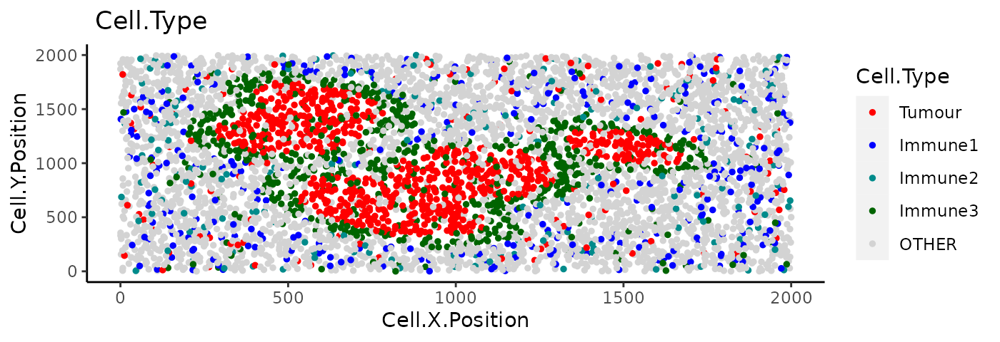
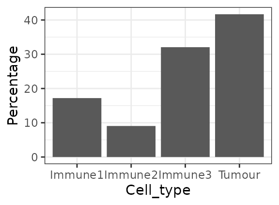
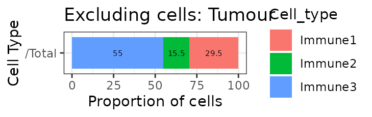
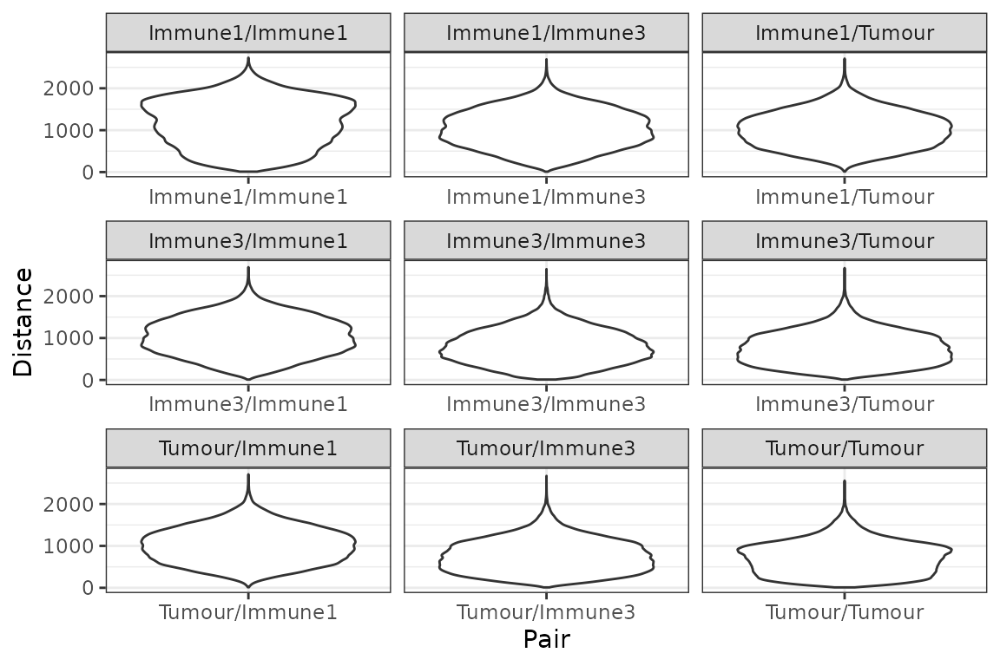
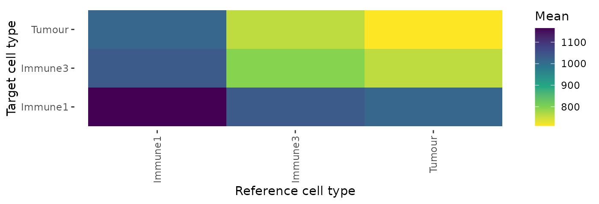
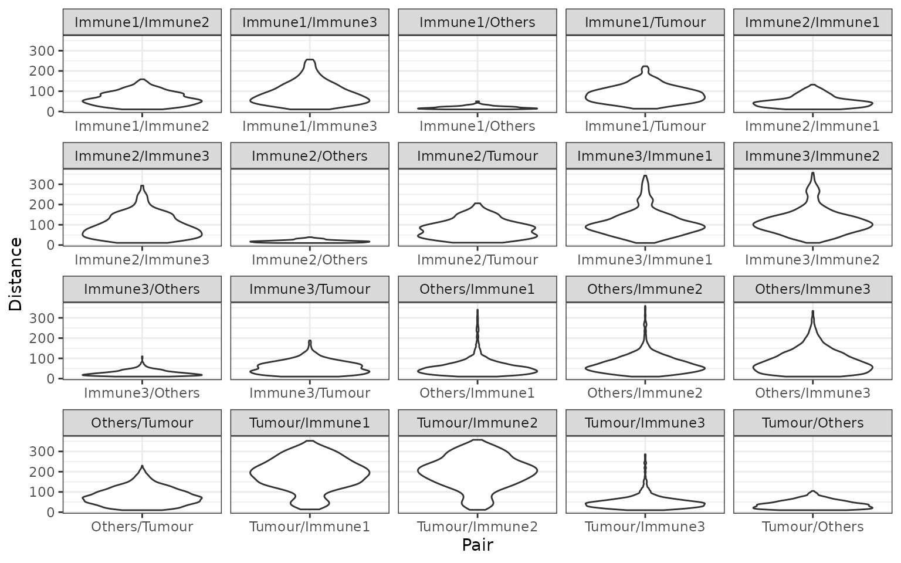
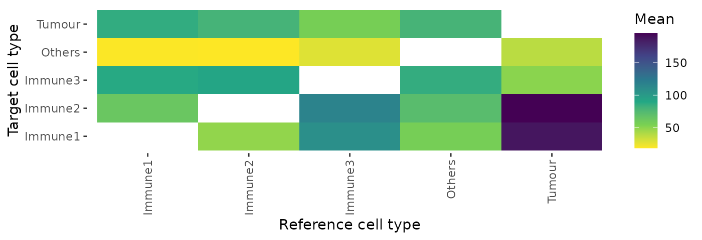

vignettes/basic_analysis.Rmd
basic_analysis.RmdIn this vignette we will use an inForm data file that’s already been
formatted for SPIAT with format_image_to_spe(), which we
can load with data(). We will use
define_celltypes() to define the cells with certain
combinations of markers.
data("simulated_image")
# define cell types
formatted_image <- define_celltypes(
simulated_image,
categories = c("Tumour_marker","Immune_marker1,Immune_marker2",
"Immune_marker1,Immune_marker3",
"Immune_marker1,Immune_marker2,Immune_marker4", "OTHER"),
category_colname = "Phenotype",
names = c("Tumour", "Immune1", "Immune2", "Immune3", "Others"),
new_colname = "Cell.Type")We will be performing some basic analyses on this image. Here is the visualisation of the cell coordinates.
my_colors <- c("red", "blue", "darkcyan", "darkgreen")
plot_cell_categories(spe_object = formatted_image,
categories_of_interest =
c("Tumour", "Immune1", "Immune2", "Immune3"),
colour_vector = my_colors,
feature_colname = "Cell.Type")
We can obtain the number and proportion of each cell type with
calculate_cell_proportions(). We can use
reference_celltypes to specify cell types to use as the
reference. For example, “Total” will calculate the proportion of each
cell type against all cells. We can exclude any cell types that are not
of interest e.g. “Undefined” with celltypes_to_exclude.
p_cells <- calculate_cell_proportions(formatted_image,
reference_celltypes = NULL,
feature_colname ="Cell.Type",
celltypes_to_exclude = "Others",
plot.image = TRUE)
p_cells## Cell_type Number_of_celltype Proportion Percentage Proportion_name
## 5 Tumour 819 0.41679389 41.679389 /Total
## 3 Immune3 630 0.32061069 32.061069 /Total
## 1 Immune1 338 0.17201018 17.201018 /Total
## 2 Immune2 178 0.09058524 9.058524 /TotalAlternatively, we can also visualise cell type proportions as
barplots using plot_cell_percentages().
plot_cell_percentages(cell_proportions = p_cells,
cells_to_exclude = "Tumour", cellprop_colname="Proportion_name")
We can calculate the pairwise distances between two cell types (cell
type A and cell type B) with
calculate_pairwise_distances_between_cell_types(). This
function calculates the distances of all cells of type A against all
cells of type B.
This function returns a data frame that contains all the pairwise distances between each cell of cell type A and cell type B.
distances <- calculate_pairwise_distances_between_celltypes(
spe_object = formatted_image,
cell_types_of_interest = c("Tumour", "Immune1", "Immune3"),
feature_colname = "Cell.Type")The pairwise distances can be visualised as a violin plot with
plot_cell_distances_violin().
plot_cell_distances_violin(distances)
We can also calculate summary statistics for the distances between
each combination of cell types, the mean, median, min, max and standard
deviation, with
calculate_summary_distances_between_celltypes().
summary_distances <- calculate_summary_distances_between_celltypes(distances)
summary_distances## Pair Mean Min Max Median Std.Dev Reference
## 1 Immune1/Immune1 1164.7096 10.84056 2729.120 1191.3645 552.0154 Immune1
## 2 Immune1/Immune3 1034.4960 10.23688 2691.514 1026.4414 442.2515 Immune1
## 3 Immune1/Tumour 1013.3697 13.59204 2708.343 1004.6579 413.7815 Immune1
## 4 Immune3/Immune1 1034.4960 10.23688 2691.514 1026.4414 442.2515 Immune3
## 5 Immune3/Immune3 794.7765 10.17353 2645.302 769.9948 397.8863 Immune3
## 6 Immune3/Tumour 758.2732 10.02387 2670.861 733.4501 380.7703 Immune3
## 7 Tumour/Immune1 1013.3697 13.59204 2708.343 1004.6579 413.7815 Tumour
## 8 Tumour/Immune3 758.2732 10.02387 2670.861 733.4501 380.7703 Tumour
## 9 Tumour/Tumour 711.2657 10.00348 2556.332 703.9096 380.3293 Tumour
## Target
## 1 Immune1
## 2 Immune3
## 3 Tumour
## 4 Immune1
## 5 Immune3
## 6 Tumour
## 7 Immune1
## 8 Immune3
## 9 TumourAn example of the interpretation of this result is: “average pairwise distance between cells of Immune3 and Immune1 is 1034.496”.
These pairwise cell distances can then be visualised as a heatmap
with plot_distance_heatmap(). This example shows the
average pairwise distances between cell types. Note that the pairwise
distances are symmetrical (the average distance between cell type A and
cell type B is the same as the average distance between cell Type B and
cell Type A).
plot_distance_heatmap(phenotype_distances_result = summary_distances, metric = "mean")
This plot shows that Tumour cells are interacting most closely with Tumour cells and Immune3 cells.
We can also calculate the minimum distances between cell types with
calculate_minimum_distances_between_celltypes(). Unlike the
pairwise distance where we calculate the distances between all cell
types of interest, here we only identify the distance to the closest
cell of type B to each of the reference cells of type A.
min_dist <- calculate_minimum_distances_between_celltypes(
spe_object = formatted_image,
cell_types_of_interest = c("Tumour", "Immune1", "Immune2","Immune3", "Others"),
feature_colname = "Cell.Type")## [1] "Markers had been selected in minimum distance calculation: "
## [1] "Others" "Immune1" "Tumour" "Immune3" "Immune2"The minimum distances can be visualised as a violin plot with
plot_cell_distances_violin(). Visualisation of this
distribution often reveals whether pairs of cells are evenly spaced
across the image, or whether there are clusters of pairs of cell
types.
plot_cell_distances_violin(cell_to_cell_dist = min_dist)
We can also calculate summary statistics for the distances between
each combination of cell types, the mean, median, min, max and standard
deviation, with
calculate_summary_distances_between_celltypes().
min_summary_dist <- calculate_summary_distances_between_celltypes(min_dist)
# show the first five rows
min_summary_dist[seq_len(5),]## Pair Mean Min Max Median Std.Dev Reference
## 1 Immune1/Immune2 63.65211 10.33652 158.80504 59.01846 32.58482 Immune1
## 2 Immune1/Immune3 88.46152 10.23688 256.30328 77.21765 53.73164 Immune1
## 3 Immune1/Others 19.24038 10.05203 49.86409 17.49196 7.19293 Immune1
## 4 Immune1/Tumour 85.84773 13.59204 223.15809 80.80592 40.72454 Immune1
## 5 Immune2/Immune1 48.45885 10.33652 132.31086 43.71936 27.43245 Immune2
## Target
## 1 Immune2
## 2 Immune3
## 3 Others
## 4 Tumour
## 5 Immune1Unlike the pairwise distance, the minimum distances are not symmetrical, and therefore we output a summary of the minimum distances specifying the reference and target cell types used.
An example of the interpretation of this result is: “average minimum distance between cells of Immune1 and Tumour is 85.84773”.
Similarly, the summary statistics of the minimum distances can also be visualised by a heatmap. This example shows the average minimum distance between cell types.
plot_distance_heatmap(phenotype_distances_result = min_summary_dist, metric = "mean")
## R version 4.3.3 (2024-02-29)
## Platform: x86_64-pc-linux-gnu (64-bit)
## Running under: Ubuntu 22.04.4 LTS
##
## Matrix products: default
## BLAS: /usr/lib/x86_64-linux-gnu/openblas-pthread/libblas.so.3
## LAPACK: /usr/lib/x86_64-linux-gnu/openblas-pthread/libopenblasp-r0.3.20.so; LAPACK version 3.10.0
##
## locale:
## [1] LC_CTYPE=C.UTF-8 LC_NUMERIC=C LC_TIME=C.UTF-8
## [4] LC_COLLATE=C.UTF-8 LC_MONETARY=C.UTF-8 LC_MESSAGES=C.UTF-8
## [7] LC_PAPER=C.UTF-8 LC_NAME=C LC_ADDRESS=C
## [10] LC_TELEPHONE=C LC_MEASUREMENT=C.UTF-8 LC_IDENTIFICATION=C
##
## time zone: UTC
## tzcode source: system (glibc)
##
## attached base packages:
## [1] stats4 stats graphics grDevices utils datasets methods
## [8] base
##
## other attached packages:
## [1] SPIAT_1.4.2 SpatialExperiment_1.12.0
## [3] SingleCellExperiment_1.24.0 SummarizedExperiment_1.32.0
## [5] Biobase_2.62.0 GenomicRanges_1.54.1
## [7] GenomeInfoDb_1.38.8 IRanges_2.36.0
## [9] S4Vectors_0.40.2 BiocGenerics_0.48.1
## [11] MatrixGenerics_1.14.0 matrixStats_1.2.0
## [13] BiocStyle_2.30.0
##
## loaded via a namespace (and not attached):
## [1] tidyselect_1.2.1 viridisLite_0.4.2 dplyr_1.1.4
## [4] farver_2.1.1 bitops_1.0-7 fastmap_1.1.1
## [7] RCurl_1.98-1.14 spatstat.geom_3.2-9 spatstat.explore_3.2-6
## [10] RANN_2.6.1 digest_0.6.35 lifecycle_1.0.4
## [13] spatstat.data_3.0-4 magrittr_2.0.3 compiler_4.3.3
## [16] rlang_1.1.3 sass_0.4.9 tools_4.3.3
## [19] utf8_1.2.4 yaml_2.3.8 knitr_1.45
## [22] S4Arrays_1.2.1 labeling_0.4.3 DelayedArray_0.28.0
## [25] plyr_1.8.9 abind_1.4-5 withr_3.0.0
## [28] purrr_1.0.2 desc_1.4.3 grid_4.3.3
## [31] polyclip_1.10-6 fansi_1.0.6 colorspace_2.1-0
## [34] ggplot2_3.5.0 gtools_3.9.5 scales_1.3.0
## [37] spatstat.utils_3.0-4 cli_3.6.2 rmarkdown_2.26
## [40] crayon_1.5.2 ragg_1.3.0 generics_0.1.3
## [43] reshape2_1.4.4 rjson_0.2.21 cachem_1.0.8
## [46] stringr_1.5.1 zlibbioc_1.48.2 BiocManager_1.30.22
## [49] XVector_0.42.0 vctrs_0.6.5 Matrix_1.6-5
## [52] jsonlite_1.8.8 bookdown_0.38 tensor_1.5
## [55] systemfonts_1.0.6 magick_2.8.3 jquerylib_0.1.4
## [58] goftest_1.2-3 glue_1.7.0 spatstat.random_3.2-3
## [61] pkgdown_2.0.7 stringi_1.8.3 gtable_0.3.4
## [64] deldir_2.0-4 munsell_0.5.0 tibble_3.2.1
## [67] pillar_1.9.0 htmltools_0.5.7 GenomeInfoDbData_1.2.11
## [70] R6_2.5.1 textshaping_0.3.7 evaluate_0.23
## [73] lattice_0.22-5 apcluster_1.4.11 highr_0.10
## [76] memoise_2.0.1 bslib_0.6.1 Rcpp_1.0.12
## [79] gridExtra_2.3 SparseArray_1.2.4 nlme_3.1-164
## [82] spatstat.sparse_3.0-3 xfun_0.42 fs_1.6.3
## [85] pkgconfig_2.0.3